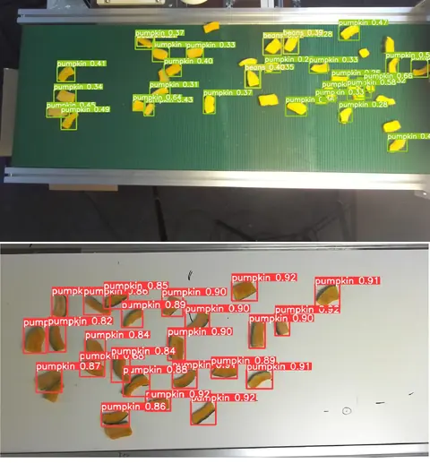
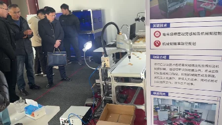

工业分拣Industrial sorting · 安徽安粮控股股份公司Anhui ANLIANG Holdings
果蔬干分拣产线项目Dried-fruit sorting pilot line
面向果蔬干产线的识别、分拣与计数，结合视觉定位、四自由度机械臂抓放和产线协同控制；完成产线联调及预研验收。For dried-fruit and vegetable sorting and counting, visual localization, a four-degree-of-freedom arm, and line coordination are integrated; the pilot line completed commissioning and acceptance.
- 合作单位Partner
- 安徽安粮控股股份公司Anhui ANLIANG Holdings
- 本人职责Role
- 识别定位、机械臂抓放与计数等核心模块Core perception, arm pick-and-place, and counting modules
项目背景Background
预研产线需要把视觉识别结果转化为可执行的分拣动作，并与输送和其他机械结构按顺序协作。The pilot line requires visual detections to drive sorting actions in coordination with conveyors and other mechanisms.
产线运行要求感知、机械臂和输送设备按顺序配合：目标位置变化、抓取时机与设备状态不一致都会影响作业连续性。项目重点是把视觉分拣流程与现场硬件逻辑连通。Line operation requires coordinated sensing, robot motion, and conveying: target movement, picking timing, and equipment state affect continuity. The focus is integrating visual sorting with the pilot line’s hardware logic.
任务说明Task
识别并定位果蔬干，控制机械臂抓取后放置到指定区域，记录处理数量并与产线硬件逻辑交互。Detect and localize dried fruit, pick and place items in target areas, count processed items, and coordinate with line logic.
围绕目标识别定位、机械臂取放、处理计数和设备联动完成流程调试，在现场预研平台检查各环节的输入输出与执行顺序。Detection and localization, arm pick-and-place, processing counts, and equipment coordination are commissioned together on the pilot platform, checking data interfaces and execution order.
设备说明Robot hardware
系统采用四自由度机械臂、视觉采集与计算单元及配套产线机械。The system uses a four-degree-of-freedom arm, vision/computing hardware, and the associated line mechanisms.
系统和关键技术System and key technologies
视觉模块输出目标位置，机械臂执行抓取与放置，计数模块记录处理进度；控制逻辑协调机械臂与其他硬件设备。Vision provides target positions, the arm executes pick-and-place, and counting records progress. Control logic coordinates the arm with the other equipment.
系统以目标位置和设备状态为接口组织视觉、抓取与产线控制，计数信息用于记录处理进度。现场联调检查机械臂动作与其他机构的衔接，材料记录了预研调试与验收过程。Target positions and equipment state connect vision, grasping, and line control, while counts track progress. On-site integration checks arm interactions with other mechanisms; the supplied material records pilot commissioning and acceptance.

演示与结果Demonstrations and results
该预研产线已通过验收，现场视频展示机械臂与产线协同。The slides record acceptance of the pilot line, with on-site footage showing the arm and equipment.
